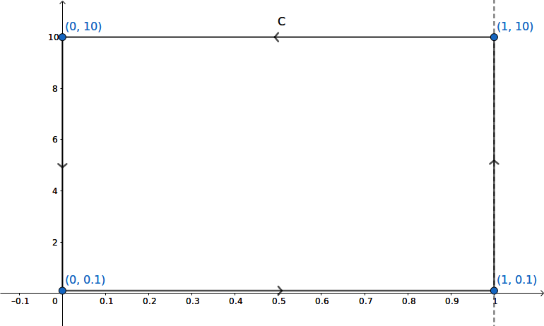

Verifying the Riemann Hypothesis with SymPy and mpmath
Like most people, I've had a lot of free time recently, and I've spent some of it watching various YouTube videos about the Riemann Hypothesis. I've collected the videos I've watched into YouTube playlist. The playlist is sorted with the most mathematically approachable videos first, so even if you haven't studied complex analysis before, you can watch the first few. If you have studied complex analysis, all the videos will be within your reach (none of them are highly technical with proofs). Each video contains parts that aren't in any of the other videos, so you will get something out of watching each of them.
The last video in the playlist is a lecture by Keith Conrad. In it, he mentioned a method by which one could go about verifying the Riemann Hypothesis with a computer. I wanted to see if I could do this with SymPy and mpmath. It turns out you can.
Background Mathematics
Euler's Product Formula
Before we get to the computations, let's go over some mathematical background. As you may know, the Riemann Hypothesis is one of the 7 Millennium Prize Problems outlined by the Clay Mathematics Institute in 2000. The problems have gained some fame because each problem comes with a $1,000,000 prize if solved. One problem, the Poincaré conjecture, has already been solved (Grigori Perelman who solved it turned down the 1 million dollar prize). The remainder remain unsolved.
The Riemann Hypothesis is one of the most famous of these problems. The reason for this is that the problem is central many open questions in number theory. There are hundreds of theorems which are only known to be true contingent on the Riemann Hypothesis, meaning that if the Riemann Hypothesis were proven, immediately hundreds of theorems would be proven as well. Also, unlike some other Millennium Prize problems, like P=NP, the Riemann Hypothesis is almost universally believed to be true by mathematicians. So it's not a question of whether or not it is true, just one of how to actually prove it. The problem has been open for over 160 years, and while many advances have been made, no one has yet come up with a proof of it (crackpot proofs aside).
To understand the statement of the hypothesis, we must first define the zeta function. Let
$$\zeta(s) = \sum_{n=1}^\infty \frac{1}{n^s}$$
(that squiggle $\zeta$ is the lowercase Greek letter zeta). This expression makes sense if $s$ is an integer greater than or equal to 2, $s=2, 3, 4, \ldots$, since we know from simple arguments from calculus that the summation converges in those cases (it isn't important for us what those values are, only that the summation converges). The story begins with Euler, who in 1740 considered the following infinite product:
$$\prod_{\text{$p$ prime}}\frac{1}{1 - \frac{1}{p^s}}.$$
The product ranges over all prime numbers, i.e., it is $$\left(\frac{1}{1 - \frac{1}{2^s}}\right)\cdot\left(\frac{1}{1 - \frac{1}{3^s}}\right)\cdot\left(\frac{1}{1 - \frac{1}{5^s}}\right)\cdots.$$ The fraction $\frac{1}{1 - \frac{1}{p}}$ may seem odd at first, but consider the famous geometric series formula, $$\sum_{k=0}^\infty r^k = \frac{1}{1 - r},$$ which is true for $|r| < 1$. Our fraction is exactly of this form, with $r = \frac{1}{p^s}$. So substituting, we have
$$\prod_{\text{$p$ prime}}\frac{1}{1 - \frac{1}{p^s}} = \prod_{\text{$p$ prime}}\sum_{k=0}^\infty \left(\frac{1}{p^s}\right)^k = \prod_{\text{$p$ prime}}\sum_{k=0}^\infty \left(\frac{1}{p^k}\right)^s.$$
Let's take a closer look at what this is. It is
$$\left(\frac{1}{p_1^s} + \frac{1}{p_1^{2s}} + \frac{1}{p_1^{3s}} + \cdots\right)\cdot\left(\frac{1}{p_2^s} + \frac{1}{p_2^{2s}} + \frac{1}{p_2^{3s}} + \cdots\right)\cdot\left(\frac{1}{p_3^s} + \frac{1}{p_3^{2s}} + \frac{1}{p_3^{3s}} + \cdots\right)\cdots,$$
where $p_1$ is the first prime, $p_2$ is the second prime, and so on. Now think about how to expand finite products of finite sums, for instance, $$(x_1 + x_2 + x_3)(y_1 + y_2 + y_3)(z_1 + z_2 + z_3).$$ To expand the above, you would take a sum of every combination where you pick one $x$ term, one $y$ term, and one $z$ term, giving
$$x_1y_1z_1 + x_1y_1z_2 + \cdots + x_2y_1z_3 + \cdots + x_3y_2z_1 + \cdots + x_3y_3z_3.$$
So to expand the infinite product, we do the same thing. We take every combination of picking $1/p_i^{ks}$, with one $k$ for each $i$. If we pick infinitely many non-$1$ powers, the product will be zero, so we only need to consider terms where there are finitely many primes. The resulting sum will be something like
$$\frac{1}{1^s} + \frac{1}{p_1^s} + \frac{1}{p_2^s} + \frac{1}{\left(p_1^2\right)^s} + \frac{1}{p_3^s} + \frac{1}{\left(p_1p_2\right)^s} + \cdots,$$
where each prime power combination is picked exactly once. However, we know by the Fundamental Theorem of Arithmetic that when you take all combinations of products primes that you get each positive integer exactly once. So the above sum is just
$$\frac{1}{1^s} + \frac{1}{2^s} + \frac{1}{3^s} + \cdots,$$ which is just $\zeta(s)$ as we defined it above.
In other words,
$$\zeta(s) = \sum_{n=1}^\infty \frac{1}{n^s} = \prod_{\text{$p$ prime}}\frac{1}{1 - \frac{1}{p^s}},$$ for $s = 2, 3, 4, \ldots$. This is known as Euler's product formula for the zeta function. Euler's product formula gives us our first clue as to why the zeta function can give us insights into prime numbers.
Analytic Continuation
In 1859, Bernhard Riemann wrote a short 9 page paper on number theory and the zeta function. It was the only paper Riemann ever wrote on the subject of number theory, but it is undoubtedly one of the most important papers every written on the subject.
In the paper, Riemann considered that the zeta function summation,
$$\zeta(s) = \sum_{n=1}^\infty \frac{1}{n^s},$$
makes sense not just for integers $s = 2, 3, 4, \ldots$, but for any real number $s > 1$ (if $s = 1$, the summation is the harmonic series, which famously diverges). In fact, it is not hard to see that for complex $s$, the summation makes sense so long as $\mathrm{Re}(s) > 1$ (for more about what it even means for $s$ to be complex in that formula, and the basic ideas of analytic continuation, I recommend 3Blue1Brown's video from my YouTube playlist).
Riemann wanted to extend this function to the entire complex plane, not just $\mathrm{Re}(s) > 1$. The process of doing this is called analytic continuation. The theory of complex analysis tells us that if we can find an extension of $\zeta(s)$ to the whole complex plan that remains differentiable, then that extension is unique, and we can reasonably say that that is the definition of the function everywhere.
Riemann used the following approach. Consider what we might call the "completed zeta function"
$$Z(s) = \pi^{-\frac{s}{2}}\Gamma\left(\frac{s}{2}\right)\zeta(s).$$
Using Fourier analysis, Riemann gave a formula for $Z(s)$ that is defined everywhere, allowing us to use it to define $\zeta(s)$ to the left of 1. I won't repeat Riemann's formula for $Z(s)$ as the exact formula isn't important, but from it one could also see
-
$Z(s)$ is defined everywhere in the complex plane, except for simple poles at 0 and 1.
-
$Z(s) = Z(1 - s).$ This means if we have a value for $s$ that is right of the line $\mathrm{Re}(z) = \frac{1}{2},$ we can get a value to the left of it by reflecting it over the real-axis and the line at $\frac{1}{2}$ (to see this, note that the average of $s$ and $1 - s$ is $1/2$, so the midpoint of a line connecting the two should always go through the point $1/2$).
(Reflection of $s$ and $1 - s$. Created with Geogebra)
Zeros
Looking at $Z(s)$, it is a product of three parts. So the zeros and poles of $Z(s)$ correspond to the zeros and poles of these parts, unless they cancel. $\pi^{-\frac{s}{2}}$ is the easiest: it has no zeros and no poles. The second part is the gamma function. $\Gamma(z)$ has no zeros and has simple poles at nonpositive integers $z=0, -1, -2, \ldots$.
So taking this, along with the fact that $Z(s)$ is entire except for simple poles at 0 and 1, we get from $$\zeta(s) = \frac{Z(s)}{\pi^{-\frac{s}{2}}\Gamma\left(\frac{s}{2}\right)}$$
- $Z(s)$ has a simple pole at 1, which means that $\zeta(s)$ does as well. This is not surprising, since we already know the summation formula from above diverges as $s$ approaches 1.
- $Z(s)$ has a simple pole at 0. Since $\Gamma\left(\frac{s}{2}\right)$ also has a simple pole at 0, they must cancel and $\zeta(s)$ must have neither a zero nor a pole at 0 (in fact, $\zeta(0) = -1/2$).
- Since $\Gamma\left(\frac{s}{2}\right)$ has no zeros, there are no further poles of $\zeta(s)$. Thus, $\zeta(s)$ is entire everywhere except for a simple pole at $s=1$.
- $\Gamma\left(\frac{s}{2}\right)$ has poles at the remaining negative even integers. Since $Z(s)$ has no poles there, these must correspond to zeros of $\zeta(s)$. These are the so-called "trivial" zeros of the zeta function, at $s=-2, -4, -6, \ldots$. The term "trivial" here is a relative one. They are trivial to see from the above formula, whereas other zeros of $\zeta(s)$ are much harder to find.
- $\zeta(s) \neq 0$ if $\mathrm{Re}(s) > 1$. One way to see this is from the Euler product formula. Since each term in the product is not zero, the function itself cannot be zero (this is a bit hand-wavy, but it can be made rigorous). This implies that $Z(s) \neq 0$ in this region as well. We can reflect $\mathrm{Re}(s) > 1$ over the line at $\frac{1}{2}$ by considering $\zeta(1 - s)$. Using the above formula and the fact that $Z(s) = Z(1 - s)$, we see that $\zeta(s)$ cannot be zero for $\mathrm{Re}(s) < 0$ either, with the exception of the aforementioned trivial zeros at $s=-2, -4, -6, \ldots$.
Thus, any non-trivial zeros of $\zeta(s)$ must have real part between 0 and 1. This is the so-called "critical strip". Riemann hypothesized that these zeros are not only between 0 and 1, but are in fact on the line dividing the strip at real part equal to $1/2$. This line is called the "critical line". This is Riemann's famous hypothesis: that all the non-trivial zeros of $\zeta(s)$ have real part equal to $1/2$.
Computational Verification
Whenever you have a mathematical hypothesis, it is good to check if it is true numerically. Riemann himself used some methods (not the same ones we use here) to numerically estimate the first few non-trivial zeros of $\zeta(s)$, and found that they lied on the critical line, hence the motivation for his hypotehsis. Here is an English translation of his original paper if you are interested.
If we verified that all the zeros in the critical strip from, say, $\mathrm{Im}(s) = 0$ to $\mathrm{Im}(s) = N$ are in fact on the critical line for some large $N$, then it would give evidence that the Riemann Hypothesis is true. However, to be sure, this would not constitute a proof. Hardy showed in 1914 that $\zeta(s)$ has infinitely many zeros on the critical strip, so only finding finitely many of them would not suffice as a proof. (Although if we were to find a counter-example, a zero not on the critical line, that WOULD constitute a proof that the Hypothesis is false. However, there are strong reasons to believe that the hypothesis is not false, so this would be unlikely to happen.)
How would we verify that the zeros are all on the line $1/2$. We can find zeros of $\zeta(s)$ numerically, but how would we know if the real part is really exactly 0.5 and not 0.500000000000000000000000000000000001? And more importantly, just because we find some zeros, it doesn't mean that we have all of them. Maybe we can find a bunch of zeros on the critical line, but how would we be sure that there aren't other zeros lurking around elsewhere on the critical strip?
We want to find rigorous answers to these two questions:
-
How can we count the number of zeros between $\mathrm{Im}(s) = 0$ and $\mathrm{Im}(s) = N$ of $\zeta(s)$?
-
How can we verify that all those zeros lie on the critical line, that is, they have real part equal to exactly $1/2$?
Counting Zeros Part 1
To answer the first question, we can make use of a powerful theorem from complex analysis called the argument principle. The argument principle says that if $f$ is a meromorphic function on some closed contour $C$, and does not have any zeros or poles on $C$ itself, then
$$\frac{1}{2\pi i}\oint_C \frac{f'(z)}{f(z)}\,ds = \#\left\{\text{zeros of $f$ inside of C}\right\} - \#\left\{\text{poles of $f$ inside of C}\right\},$$ where all zeros and poles are counted with multiplicity.
In other words, the integral on the left-hand side counts the number of zeros of $f$ minus the number of poles of $f$ in a region. The argument principle is quite easy to show given the Cauchy residue theorem (see the above linked Wikipedia article for a proof). The expression $f'(z)/f(z)$ is called the "logarithmic derivative of $f$", because it equals $\frac{d}{dz} \log(f(z))$ (although it makes sense even without defining what "$\log$" means).
One should take a moment to appreciate the beauty of this result. The left-hand side is an integral, something we generally think of as being a continuous quantity. But it is always exactly equal to an integer. Results such as these give us a further glimpse at how analytic functions and complex analysis can produce theorems about number theory, a field which one would naively think can only be studied via discrete means. In fact, these methods are far more powerful than discrete methods. For many results in number theory, we only know how to prove them using complex analytic means. So-called "elementary" proofs for these results, or proofs that only use discrete methods and do not use complex analysis, have not yet been found.
Practically speaking, the fact that the above integral is exactly an integer means that if we compute it numerically and it comes out to something like 0.9999999, we know that it must in fact equal exactly 1. So as long as we get a result that is near an integer, we can round it to the exact answer.
We can integrate a contour along the critical strip up to some $\mathrm{Im}(s) = N$ to count the number of zeros up to $N$ (we have to make sure to account for the poles. I go into more details about this when I actually compute the integral below).
Counting Zeros Part 2
So using the argument principle, we can count the number of zeros in a region. Now how can we verify that they all lie on the critical line? The answer lies in the $Z(s)$ function defined above. By the points outlined in the previous section, we can see that $Z(s)$ is zero exactly where $\zeta(s)$ is zero on the critical strip, and it is not zero anywhere else. In other words,
This helps us because $Z(s)$ has a nice property on the critical line. First we note that $Z(s)$ commutes with conjugation, that is $\overline{Z(s)} = Z(\overline{s})$ (this isn't obvious from what I have shown, but it is true). On the critical line $\frac{1}{2} + it$, we have
$$\overline{Z\left(\frac{1}{2} + it\right)} = Z\left(\overline{\frac{1}{2} + it}\right) = Z\left(\frac{1}{2} - it\right).$$
However, $Z(s) = Z(1 - s)$, and $1 - \left(\frac{1}{2} - it\right) = \frac{1}{2} + it$, so
$$\overline{Z\left(\frac{1}{2} + it\right)} = Z\left(\frac{1}{2} + it\right),$$
which means that $Z\left(\frac{1}{2} + it\right)$ is real valued for real $t$.
This simplifies things a lot, because it is much easier to find zeros of a real function. In fact, we don't even care about finding the zeros, only counting them. Since $Z(s)$ is continuous, we can use a simple method: counting sign changes. If a continuous real function changes signs from negative to positive or from positive to negative n times in an interval, then it must have at least n zeros in that interval. It may have more, for instance, if some zeros are clustered close together, or if a zero has a multiplicity greater than 1, but we know that there must be at least n.
So our approach to verifying the Riemann Hypothesis is as such:
-
Integrate $\frac{1}{2\pi i}\oint_C Z'(s)/Z(s)\,ds$ along a contour $C$ that runs along the critical strip up to some $\mathrm{Im}(s) = N$. The integral will tell us there are exactly $n$ zeros in the contour, counting multiplicity.
-
Try to find $n$ sign changes of $Z(1/2 + it)$ for $t\in [0, N]$. If we can find $n$ of them, we are done. We have confirmed all the zeros are on the critical line.
Step 2 would fail if the Riemann Hypothesis is false, in which case a zero wouldn't be on the critical line. But it would also fail if a zero has a multiplicity greater than 1, since the integral would count it more times than the sign changes. Fortunately, as it turns out, the Riemann Hypothesis has been verified up to N = 10000000000000, and no one has yet found a zero of the zeta function yet that has a multiplicity greater than 1, so we should not expect that to happen (no one has yet found a counterexample to the Riemann Hypothesis either).
Verification with SymPy and mpmath
We now use SymPy and mpmath to compute the above quantities. We use
SymPy to do symbolic manipulation for us, but the
heavy work is done by mpmath.
mpmath is a pure Python library for arbitrary precision numerics. It is used
by SymPy under the hood, but it will be easier for us to use it directly. It
can do, among other things, numeric integration. When I first tried to do
this, I tried using the scipy.special zeta
function,
but unfortunately, it does not support complex arguments.
First we do some basic imports
>>> from sympy import *
>>> import mpmath
>>> import numpy as np
>>> import matplotlib.pyplot as plt
>>> s = symbols('s')
Define the completed zeta function $Z = \pi^{-s/2}\Gamma(s/2)\zeta(s)$.
>>> Z = pi**(-s/2)*gamma(s/2)*zeta(s)
We can verify that Z is indeed real for $\frac{1}{2} + it.$
>>> Z.subs(s, 1/2 + 0.5j).evalf()
-1.97702795164031 + 5.49690501450151e-17*I
We get a small imaginary part due to the way floating point arithmetic works.
Since it is below 1e-15, we can safely ignore it.
D will be the logarithmic derivative of Z.
>>> D = simplify(Z.diff(s)/Z)
>>> D
polygamma(0, s/2)/2 - log(pi)/2 + Derivative(zeta(s), s)/zeta(s)
This is $$\frac{\operatorname{polygamma}{\left(0,\frac{s}{2} \right)}}{2} - \frac{\log{\left(\pi \right)}}{2} + \frac{ \zeta'\left(s\right)}{\zeta\left(s\right)}.$$
Note that logarithmic derivatives behave similar to logarithms. The logarithmic derivative of a product is the sum of logarithmic derivatives (the $\operatorname{polygamma}$ function is the derivative of $\Gamma$).
We now use
lambdify
to convert the SymPy expressions Z and D into functions that are evaluated
using mpmath. A technical difficulty here is that the derivative of the zeta
function $\zeta'(s)$ does not have a closed-form expression. mpmath's zeta
can evaluate
$\zeta'$
but it doesn't yet work with sympy.lambdify (see SymPy issue
11802). So we have to manually
define "Derivative" in lambdify, knowing that it will be the derivative of
zeta when it is called. Beware that this is only correct for this specific
expression where we know that Derivative will be Derivative(zeta(s), s).
>>> Z_func = lambdify(s, Z, 'mpmath')
>>> D_func = lambdify(s, D, modules=['mpmath',
... {'Derivative': lambda expr, z: mpmath.zeta(z, derivative=1)}])
Now define a function to use the argument principle to count the number of zeros up to $Ni$. Due to the symmetry $Z(s) = Z(1 - s)$, it is only necessary to count zeros in the top half-plane.
We have to be careful about the poles of $Z(s)$ at 0 and 1. We can either integrate right above them, or expand the contour to include them. I chose to do the former, starting at $0.1i$. It is known that there $\zeta(s)$ has no zeros near the real axis on the critical strip. I could have also expanded the contour to go around 0 and 1, and offset the result by 2 to account for the integral counting those points as poles.
It has also been shown that there are no zeros on the lines $\mathrm{Re}(s) = 0$ or $\mathrm{Re}(s) = 1$, so we do not need to worry about that. If the upper point of our contour happens to have zeros exactly on it, we would be very unlucky, but even if this were to happen we could just adjust it up a little bit.
(Our contour. Created with Geogebra)
mpmath.quad
can take a list of points to compute a contour. The maxdegree parameter
allows us to increase the degree of the quadrature if it becomes necessary to
get an accurate result.
>>> def argument_count(func, N, maxdegree=6):
... return 1/(2*mpmath.pi*1j)*(mpmath.quad(func,
... [1 + 0.1j, 1 + N*1j, 0 + N*1j, 0 + 0.1j, 1 + 0.1j],
... maxdegree=maxdegree))
Now let's test it. Lets count the zeros of $$s^2 - s + 1/2$$ in the box bounded by the above rectangle ($N = 10$).
>>> expr = s**2 - s + S(1)/2
>>> argument_count(lambdify(s, expr.diff(s)/expr), 10)
mpc(real='1.0', imag='3.4287545414000525e-24')
The integral is 1. We can confirm there is indeed one zero in this box, at $\frac{1}{2} + \frac{i}{2}$.
>>> solve(s**2 - s + S(1)/2)
[1/2 - I/2, 1/2 + I/2]
Now define a function to count the number of sign changes in a list of real values.
>>> def sign_changes(L):
... """
... Count the number of sign changes in L
...
... Values of L should all be real.
... """
... changes = 0
... assert im(L[0]) == 0, L[0]
... s = sign(L[0])
... for i in L[1:]:
... assert im(i) == 0, i
... s_ = sign(i)
... if s_ == 0:
... # Assume these got chopped to 0
... continue
... if s_ != s:
... changes += 1
... s = s_
... return changes
For example, for $\sin(s)$ from -10 to 10, there are 7 zeros ($3\pi\approx 9.42$)
>>> sign_changes(lambdify(s, sin(s))(np.linspace(-10, 10)))
7
Now compute sign changes along the critical line. We also make provisions in case we have to increase the precision of mpmath to get correct results here.
>>> def compute_points(Z_func, N, npoints=10000, dps=15):
... import warnings
... old_dps = mpmath.mp.dps
... points = np.linspace(0, N, npoints)
... try:
... mpmath.mp.dps = dps
... L = [mpmath.chop(Z_func(i)) for i in 1/2 + points*1j]
... finally:
... mpmath.mp.dps = old_dps
... if L[-1] == 0:
... # mpmath will give 0 if the precision is not high enough, since Z
... # decays rapidly on the critical line.
... warnings.warn("You may need to increase the precision")
... return L
Now we can check how many zeros of $Z(s)$ (and hence non-trivial zeros of $\zeta(s)$) we can find. According to Wikipedia, the first few non-trivial zeros of $\zeta(s)$ in the upper half-plane are 14.135, 21.022, and 25.011.
First try up to $N=20$.
>>> argument_count(D_func, 20)
mpc(real='0.99999931531867581', imag='-3.2332902529067346e-24')
Mathematically, the above value must be an integer, so we know it is 1.
Now check the number of sign changes of $Z(s)$ from $\frac{1}{2}$ to $\frac{1}{2} + 20i$.
>>> L = compute_points(Z_func, 20)
>>> sign_changes(L)
1
So it checks out. There is one zero between $0$ and $20i$ on the critical strip, and it is in fact on the critical line, as expected!
Now let's verify the other two zeros from Wikipedia.
>>> argument_count(D_func, 25)
mpc(real='1.9961479945577916', imag='-3.2332902529067346e-24')
>>> L = compute_points(Z_func, 25)
>>> sign_changes(L)
2
>>> argument_count(D_func, 30)
mpc(real='2.9997317058520916', imag='-3.2332902529067346e-24')
>>> L = compute_points(Z_func, 30)
>>> sign_changes(L)
3
Both check out as well.
Since we are computing the points, we can go ahead and make a plot as well. However, there is a technical difficulty. If you naively try to plot $Z(1/2 + it)$, you will find that it decays rapidly, so fast that you cannot really tell where it crosses 0:
>>> def plot_points_bad(L, N):
... npoints = len(L)
... points = np.linspace(0, N, npoints)
... plt.figure()
... plt.plot(points, L)
... plt.plot(points, [0]*npoints, linestyle=':')
>>> plot_points_bad(L, 30)
So instead of plotting $Z(1/2 + it)$, we plot $\log(|Z(1/2 + it)|)$. The logarithm will make the zeros go to $-\infty$, but these will be easy to see.
>>> def plot_points(L, N):
... npoints = len(L)
... points = np.linspace(0, N, npoints)
... p = [mpmath.log(abs(i)) for i in L]
... plt.figure()
... plt.plot(points, p)
... plt.plot(points, [0]*npoints, linestyle=':')
>>> plot_points(L, 30)
The spikes downward are the zeros.
Finally, let's check up to N=100. OEIS A072080 gives the number of zeros of $\zeta(s)$ in upper half-plane up to $10^ni$. According to it, we should get 29 zeros between $0$ and $100i$.
>>> argument_count(D_func, 100)
mpc(real='28.248036536895913', imag='-3.2332902529067346e-24')
This is not near an integer. This means we need to increase the precision of
the quadrature (the maxdegree argument).
>>> argument_count(D_func, 100, maxdegree=9)
mpc(real='29.000000005970151', imag='-3.2332902529067346e-24')
And the sign changes...
>>> L = compute_points(Z_func, 100)
__main__:11: UserWarning: You may need to increase the precisio
Our guard against the precision being too low was triggered. Try raising it (the default dps is 15).
>>> L = compute_points(Z_func, 100, dps=50)
>>> sign_changes(L)
29
They both give 29. So we have verified the Riemann Hypothesis up to $100i$!
Here is a plot of these 29 zeros.
>>> plot_points(L, 100)
(remember that the spikes downward are the zeros)
Conclusion
$N=100$ takes a few minutes to compute, and I imagine larger and larger values would require increasing the precision more, slowing it down even further, so I didn't go higher than this. But it is clear that this method works.
This was just me playing around with SymPy and mpmath, but if I wanted to actually verify the Riemann Hypothesis, I would try to find a more efficient method of computing the above quantities. For the sake of simplicity, I used $Z(s)$ for both the argument principle and sign changes computations, but it would have been more efficient to use $\zeta(s)$ for the argument principle integral, since it has a simpler formula. It would also be useful if there were a formula with similar properties to $Z(s)$ (real on the critical line with the same zeros as $\zeta(s)$), but that did not decay as rapidly.
Furthermore, for the argument principle integral, I would like to see precise error estimates for the integral. We saw above with $N=100$ with the default quadrature that we got a value of 28.248, which is not close to an integer. This tipped us off that we should increase the quadrature, which ended up giving us the right answer, but if the original number happened to be close to an integer, we might have been fooled. Ideally, one would like know the exact quadrature degree needed. If you can get error estimates guaranteeing the error for the integral will be less than 0.5, you can always round the answer to the nearest integer. For the sign changes, you don't need to be as rigorous, because simply seeing as many sign changes as you have zeros is sufficient. However, one could certainly be more efficient in computing the values along the interval, rather than just naively computing 10000 points and raising the precision until it works, as I have done.
One would also probably want to use a faster integrator than mpmath (like one written in C), and perhaps also find a faster to evaluate expression than the one I used for $Z(s)$. It is also possible that one could special-case the quadrature algorithm knowing that it will be computed on $\zeta'(s)/\zeta(s)$.
In this post I described the Riemann zeta function and the Riemann Hypothesis, and showed how to computationally verify it. But I didn't really go over the details of why the Riemann Hypothesis matters. I encourage you to watch the videos in my YouTube playlist if you want to know this. Among other things, the truth of the Riemann Hypothesis would give a very precise bound on the distribution of prime numbers. Also, the non-trivial zeros of $\zeta(s)$ are, in some sense, the "spectrum" of the prime numbers, meaning they exactly encode the position of every prime on the number line.